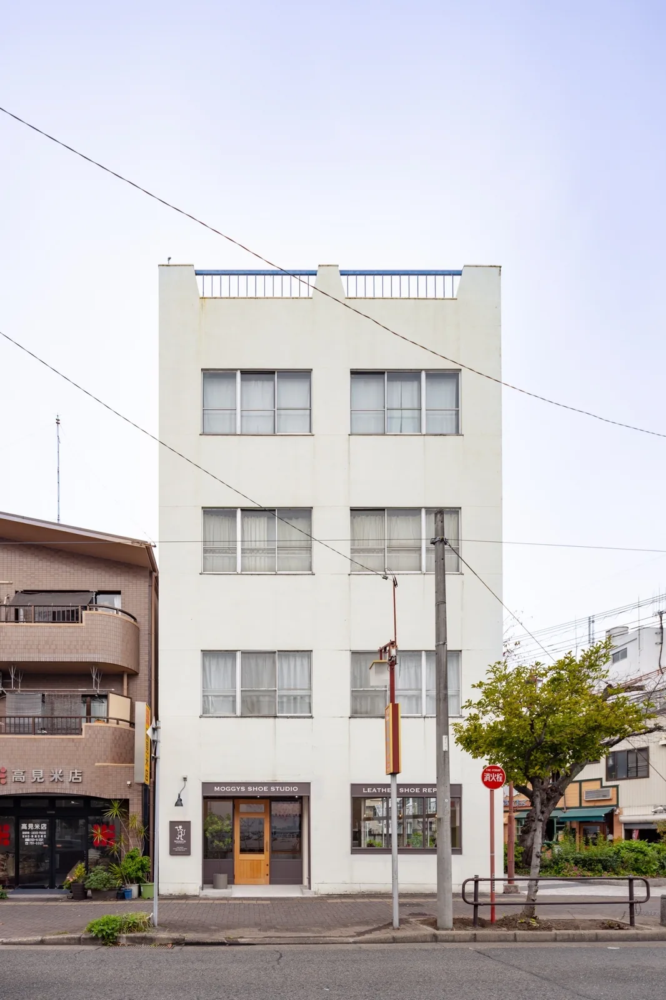

Access
ACCESS
白い建物の1階、木の扉が目印です。
最寄りは、地下鉄東山線の池下駅。
Parking
駐車場はございません。近隣のコインパーキングをご利用ください。
Hours
営業時間・定休日は、お問い合わせにて最新情報をご確認ください。

Access
白い建物の1階、木の扉が目印です。
最寄りは、地下鉄東山線の池下駅。
駐車場はございません。近隣のコインパーキングをご利用ください。
営業時間・定休日は、お問い合わせにて最新情報をご確認ください。
